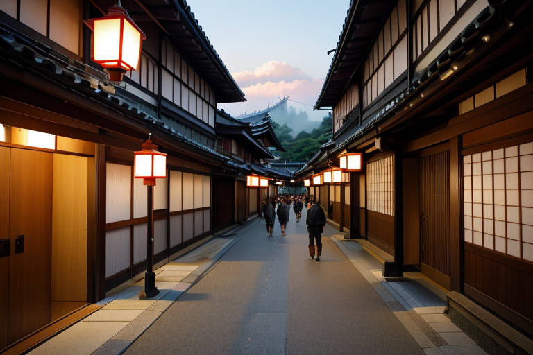
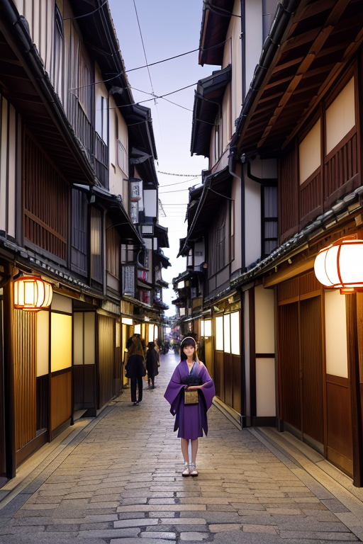
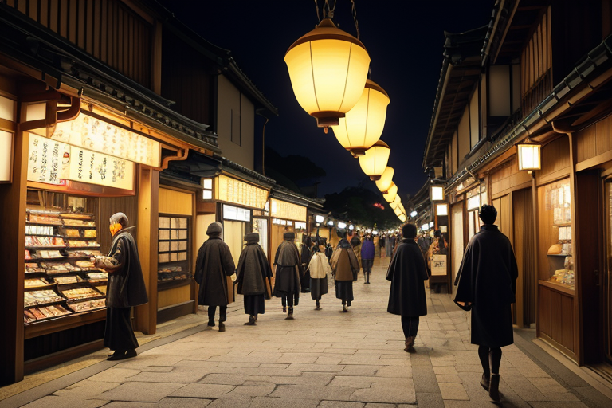
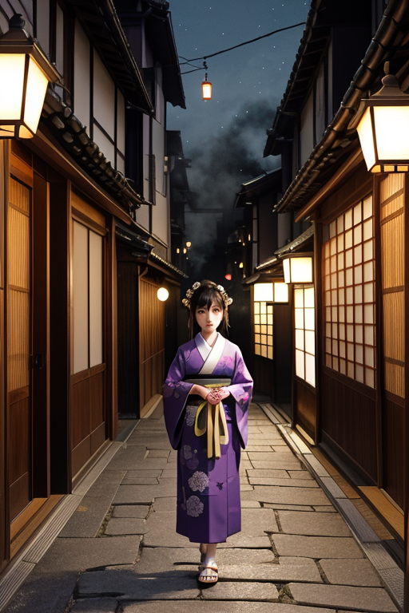
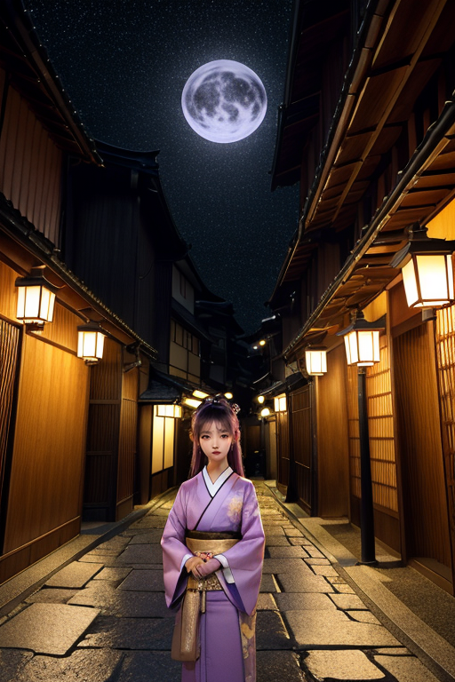

第一章 現実の京都
あなたはまだ気づいていない。この土地にも、王がいることを。
清水寺の舞台から見下ろす京の街は、朝靄に霞んでいた。石畳の道は早くも観光客の足音で満たされ、土産物屋の暖簾が次々と上がる。鴨川沿いではランナーの列が流れ、四条通りのビル群は資本の光を反射する。ここは商都線、雅商圏。人の流れと金の流れが、千年の歴史の上を淀みなく駆け抜ける活気の場だ。
その喧噪の底で、王は立っていた。キョウトリア・シール。その目は、祇園花見小路の奥に佇む京町家の暗がり、嵐山竹林の風の隙間、伏見稲荷の朱い鳥居の連なる影を、一つ一つ見つめていた。彼が見ているのは景色ではない。この街の「歪み」――積もりすぎた記憶の重み、継承の名の下に繰り返される無言の圧迫、守り続けることで生じる目に見えない亀裂だ。
彼は手を上げた。指先から微かに紫と金の光が滲み、重円結界が街の地脈にそっと重なる。大きな災いを防ぐためではない。今日という一日、この賑わいが、ほんの少しだけ調和の中で続くように。ただ、それだけの微調整だ。
守ることで、何を閉ざすのか。その問いは、彼の静かな瞳の奥で、今日もゆっくりと回り続けている。

第二章「歪みの兆候」
祇園花見小路の石畳を、観光客の足音がせわしなく打つ。木造の京町家が連なる路地は、人の熱気と欲望の匂いで満ちている。キョウトリア・シールは、その喧噪の影に溶けるように佇んでいた。彼の目は、流れる人波の中の、ほんのわずかな「ずれ」を捉えている。観光バスの到着が集中するタイミング、特定の土産店にだけ異常に偏る人流、鴨川の水位データの僅かな不自然な変動──これらは全て、この商都の地脈に生じつつある歪みの兆候だった。
彼は微かに手を動かした。指先から滲む紫と金の光が、目に見えない重円結界を形成し、過剰な人流を隣接する路地へとそっと分散させていく。災害を防ぐのではなく、経済活動という名の奔流が自壊する前に、その速度をほんの少し緩める。主席妖精シレアが歴史結界を維持し、地域妖精カグラリスが雅の波動を整える。完璧な連携だ。
しかし、調整のたびに、彼は感じる。この均衡を保つために、何かが「流れない」ようにしているのだと。ある店の偶然の繁栄は、別の路地の静かな衰退と表裏一体。守ることは、同時に選び、そして選ばれざるものを封印することなのか。彼の静かな瞳に、一抹の逡巡が過ぎた。

第三章 王の葛藤
祇園花見小路の石畳に、宵の賑わいが降り積もる。人の欲望は、光と音と金の奔流だ。王はその流れの脇に立ち、微かに歪む歴史の圧力を感じ取る。明治維新で政治の中心が去り、今は観光という名の経済が街を満たす。守るべき「雅」の形は、人々の「見せたい」という欲望によって、時に歪められ、時に増幅される。
ある老舗料亭が、伝統を守るために巨額の借金を背負う時、王はその屋根の梁にかかる重みを、ほんの少し軽減する。その代償に、隣接する小さな文房具屋の、新たな販路を開く「偶然」が、歴史の流れから消える。守ることは、選ぶこと。一つの路地の灯を保つ陰で、別の路地の灯が、ほんの少し早く消えかける。
彼は自問する。この均衡は、果たして正しいのか。感情を持たぬはずの彼の胸に、秘めた愛着が疼く。全てを救えないという無力感ではない。救うために、別の何かを閉ざすという、確かな罪の感覚。紫と金の紋章が、彼の手の甲で微かに脈打つ。

第四章 妖精との対話
「王よ、あなたは『守る』という商いをしているのです」
祇園花見小路の奥、格子戸の陰で、シレアが静かに言った。彼女の目は、石畳を流れる人の波を追っている。観光客、芸妓、商人。金と欲望と、ほんの少しの憧れが、この路地を満たす。
「商いとは、交換です。何かを得て、何かを差し出す。あなたは歪みの調整という『安定』をこの街に与える。その代償として、別の可能性の芽を摘む。それが『封印』の本質です」
鴨川のせせらぎが遠く聞こえる。カグラリスが、雅やかな調べのように言葉を継ぐ。
「応仁の乱も、東京遷都も、大きな『流れ』の変更でした。その都度、この街は多くのものを守り、多くのものを手放した。守られた雅やかさの陰で、失われた活気や、変わらざるを得なかった人々の人生があります。あなたの微調整も、その延長線上にある小さな『取引』です」
王は黙って聞く。手の甲の紋章が、冷たい石壁に触れる。守ることで閉ざすもの。それは、消えるはずのなかった偶然、生まれなかった出会い、開かれなかった路地の灯。
全てを救うことは、全てを停滞させることに等しい。ならば、と王は思う。この罪の感覚こそが、進化した感情なのだろうか。

第五章 微調整と余韻
鴨川の縁を歩く観光客の群れ。王は、その流れの僅かな淀みに手を差し伸べる。指先から放たれた紫の微光は、石畳の上で転びそうになった老人の足元を、ほんの少しだけ固くし、彼が隣にいた孫の手を自然と握るきっかけを作った。それは誰にも見えない。祇園の路地裏で、迷子になりかけた子供の目の前に、偶然風に舞い落ちる舞妓の帯揚げ。ほんの一瞬の気を引く間に、母親が駆け寄る時間を稼ぐ。
守ることで閉ざすもの。それは、老人が一人で転び、誰かの冷たい手を借りる未来かもしれない。子供がもっと深く迷い込み、見知らぬ大人に助けを求める経験かもしれない。王は、その全てを微調整の帳簿に記す。救われた小さな不幸の隣には、消えた小さな出会いが記される。罪の感覚は、愛着の裏返しだ。この街の、この人々の、ありふれた日常を、ほんの少しだけ「ありふれたまま」に保ちたいという、静かな欲望。
彼は最後に、清水寺の舞台から街を見下ろした。歪みは鎮まった。今日も、誰も知らない取引が終わる。
あなたの町にも、王がいる。